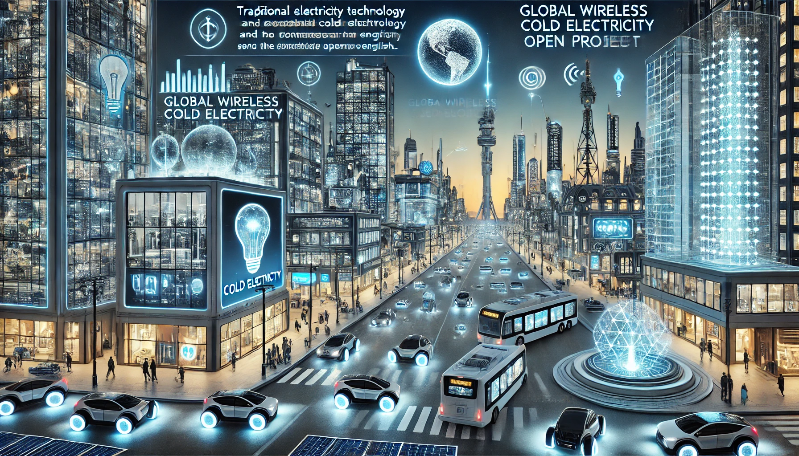

冷电开放项目在中国不复存在，项目将在其它地区继续。

图像使用人工智能创建。
主页
欢迎来到冷电开放项目，这是一个致力于推广冷电技术及其应用的开放项目。
冷电开放项目的未来愿景
冷电介绍
中文：点击查看
项目介绍
冷电开放项目的目标是聚集所有了解冷电及其特性的普通民众和专家，找到冷电的利用方法，创造自供电冷电装置，普及冷电技术并在生产、生活以及许多其他领域
利用它。它让每个人都可以在任何地方使用冷电作为取之不尽的清洁能源，并替代现有的传统能源和现有电力，包括太阳能、风电等传统可再生能源，以提高生活水
平。该项目的目标还包括利用冷电储能装置、冷电/辐射能/标量波发射器和接收器，建立全球无线冷电传输网络，使所有电器都能用冷电工作。
制作指南
正在探索中。
冷电开放子项目
#
|
子项目
|
进展
|
进展详细信息
|
1
|
自供电冷电发生器 |
进行中
|
正在设计
|
2
|
全球无线冷电传输网络
|
未开始 |
无人协助 |
3
|
冷电悬浮载具
|
未开始 |
无人协助 |
4
|
冷电与传统电器的适配
|
未开始 |
无人协助 |
|
|
|
|
加入、支持与投资
项目的创建者认为冷电如果得到广泛应用将会改变世界，想做一些自供电冷电发生器、发射器和接收器并把它们作为项目的一部分免费分发，该项目需要支持和更多人的帮助。如果你愿意加入、支持或投资冷电开放项目，请联系我们。我们欢迎各种形式的合作。
下载
下载中心
联系我们
Discord: https://discord.gg/z6kVqKEUyg
Facebook: 对不起，由于未知问题，账号创建后即被Facebook停用，冷电开放项目目前没有在Facebook的群组。
Google Chat Space: https://chat.google.com/room/AAAAJq1iMTs?cls=7
Reddit: https://www.reddit.com/r/ColdElectricityOpProj/
X账号: @OpenCold2818
https://x.com/OpenCold2818
钉钉群号（冷电开放项目中国区群）: 100965006726
Telegram 频道: https://t.me/ColdElecOpProjCh
Telegram 讨论群: https://t.me/ColdElecOpProjGr
电子邮箱: coldelecopenproj@gmail.com
冷电开放项目